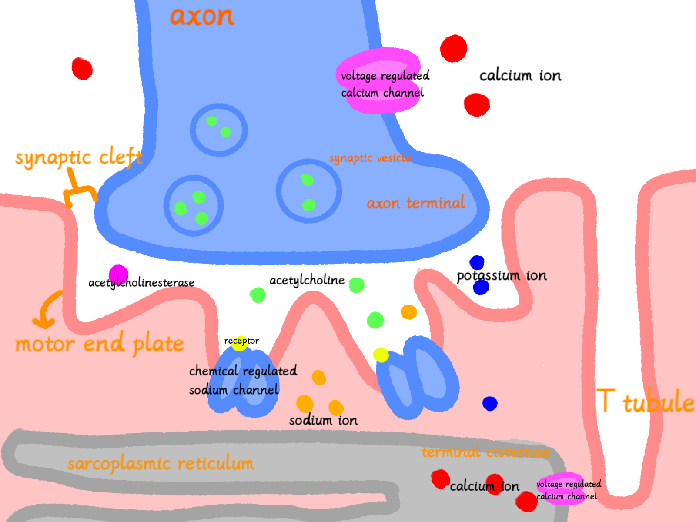
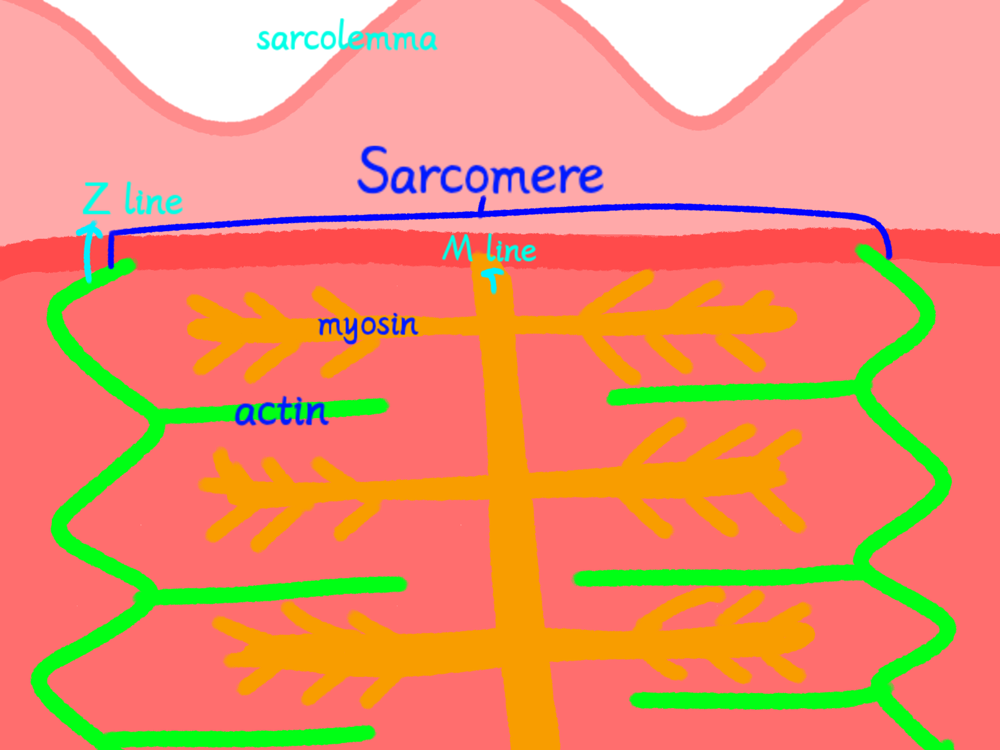
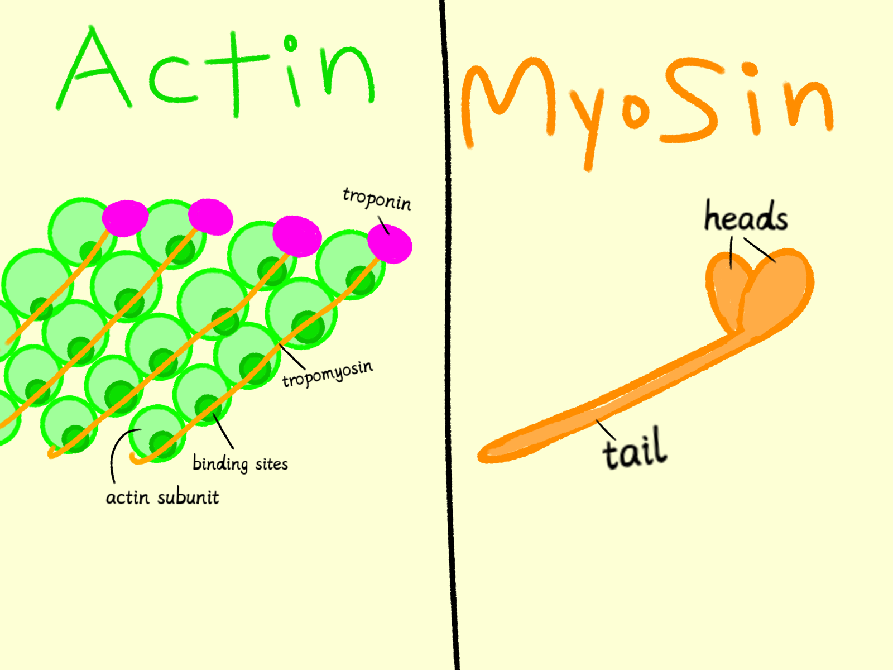

Neuromuscular Junction (NMJ)

Sarcomere

Actin and Myosin
Before we begin our investigation, let's take a closer look at the structures involved in muscle contraction.
From the connection between a motor neuron and a muscle fibre to the microscopic proteins inside the muscle, each structure plays a part in producing movement.
Explore the three diagrams below (click it) and familiarize yourself with their locations and structures. You will need this knowledge to follow the signal and uncover why the arm is not responding normally.

Neuromuscular Junction (NMJ)

Sarcomere

Actin and Myosin